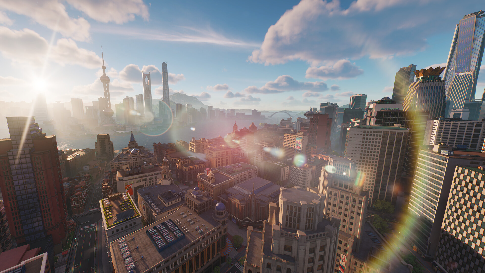
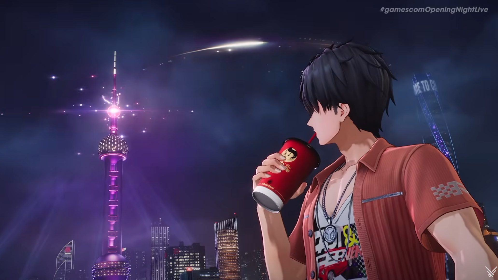
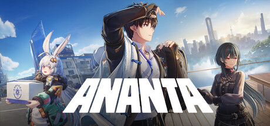

무한대ANANTA 글로벌 출시일 확정 사전예약 방법 총정리
3년 전 게임스컴에서 '프로젝트 무겐'이라는 코드명으로 살짝 얼굴만 비쳤던 신작 기억하시나요? 그 정체불명이던 게임이 이번엔 진짜 이름이랑 출시일까지 달고 돌아왔어요. 바로 '무한대(ANANTA)'인데요, 게임스컴 2026 '오프닝 나이트 라이브'에서 새 트레일러가 시선을 확 끌고 가더니 글로벌 출시일까지 확정되면서 사전예약도 본격적으로 열렸더라고요. 서브컬처 감성 오픈월드 신작을 기다려온 분들이라면 놓치기 아까운 소식이라, 오늘은 무한대가 어떤 게임인지랑 사전예약 챙기는 법까지 한 번에 정리해볼게요.
무한대(ANANTA)는 어떤 게임인가요?
무한대는 '신계시'라는 도시를 무대로 펼쳐지는 서브컬처풍 오픈월드 RPG예요. 플레이어는 질서를 어지럽히는 이상 현상에 맞서는 조직 '대책국(원문 표기 A.C.D)'의 신임 캡틴이 되어, 뿔뿔이 흩어진 팀을 다시 모으고 사건을 하나씩 풀어가는 이야기로 시작합니다. 위기와 일상이 번갈아 찾아오는 도시라는 설정이라 그런지 전투만 계속되는 게 아니라 평범한 일상 파트도 같이 섞여 있는 구조로 보이더라고요. 그리고 무엇보다 반가운 건 무한대가 완전 무료(F2P)로 서비스된다는 점이에요. 스팀 페이지에도 장르가 '액션·어드벤처·RPG·무료 플레이'로 나란히 태그돼 있어서, 부담 없이 일단 설치부터 해볼 수 있는 게임이라는 게 확실해졌어요.
이번 게임스컴 2026 오프닝 나이트 라이브에서는 이 세계관을 보여주는 새 트레일러도 함께 공개됐는데요, 도심 곳곳을 누비는 장면들이 이어지면서 신계시라는 도시가 실제로 어떤 느낌일지 미리 그려볼 수 있었어요.

스팀 공식 스토어에 올라온 스크린샷이에요. 신계시라는 도시가 이런 느낌으로 그려지나 봐요.
이미지: 무한대 스팀 페이지 · 네이버 본문엔 받아서 재업로드 권장
개발사와 퍼블리셔는 어디인가요?
무한대는 '네이키드 레인(Naked Rain)'이 개발하고, '넷이즈게임즈(NetEase Games)'가 퍼블리싱을 맡고 있어요. 이름이 비슷해서 헷갈리기 쉬운데, 게임을 직접 만드는 곳은 네이키드 레인이고 서비스·마케팅·글로벌 배급은 넷이즈게임즈가 나눠 맡는 구조로 보면 됩니다. 공식 홈페이지 하단에는 'NetEase, Inc.' 저작권 표기가, 스팀 페이지에는 퍼블리셔로 '넷이즈게임즈'가 나란히 적혀 있어서 두 출처에서 다 확인되는 부분이에요.
글로벌 출시일은 언제로 확정됐나요?
무한대의 글로벌 출시일은 2027년 1월 15일로 확정됐어요. 2026년 8월 25일 현지시간 기준으로 독일 쾰른에서 열린 게임스컴 2026 '오프닝 나이트 라이브(ONL)'에서 새 트레일러와 함께 나온 소식인데요, 국내에서는 시차 때문에 8월 26일 새벽으로 접하신 분들도 많았을 텐데 공식 발표 시점 자체는 현지 8월 25일이 맞아요. 무한대는 2023년 게임스컴에서 '프로젝트 무겐'이라는 코드명으로 처음 공개된 뒤로 3년 만에 첫 출시일을 밝힌 거라, 오래 기다려온 분들 입장에서는 꽤 두근두근한 발표였을 것 같아요.

우측 상단에 '#gamescomOpeningNightLive' 워터마크가 딱 보이는, 이번 발표 트레일러 장면이에요.
이미지: 인벤 기사 · 네이버 본문엔 받아서 재업로드 권장
어떤 플랫폼에서 즐길 수 있나요?
무한대는 PS5·PC·iOS·안드로이드까지 한 번에 지원하는 크로스플랫폼 게임이에요. 플랫폼별로 정리하면 이렇습니다.
| 플랫폼 | 비고 |
|---|---|
| PS5 | 콘솔 플레이 지원 |
| PC | 스팀(Steam) 포함 |
| iOS | 모바일 |
| 안드로이드 | 모바일 |
| 플레이스테이션 클라우드 | 공식 사이트에 함께 표기 |
플랫폼 하나에 묶이지 않고 이것저것 자유롭게 골라 즐길 수 있다는 점이 큰 장점이네요. 콘솔·PC·모바일을 이렇게 두루 지원하는 신작은 흔치 않은 편이라, 어느 기기로 시작할지 미리 정해두는 것도 나쁘지 않을 것 같아요.
사전예약은 어떻게 하나요?
사전예약은 공식 홈페이지(anantagame.com)에서 시작하면 내 기기에 맞는 스토어로 이어지는 구조예요. 플랫폼별로 정리하면 이렇습니다.
- PlayStation 5 — PS 스토어에서 사전예약
- Steam(PC) — 스팀 페이지는 사전예약 대신 위시리스트 알림(자세한 설명은 바로 아래에)
- App Store(iOS) — 앱스토어에서 사전주문
- Google Play(안드로이드) — 구글 플레이는 사전등록이 아니라 위시리스트 추가로 열려 있어요
게임스컴 발표 이후로 신청자가 꾸준히 늘면서 1,720만 명을 넘어섰고, 신청 지역도 110개국·지역까지 퍼졌다고 해요(게임스컴 2026 발표 시점 기준). 저도 트레일러 보고 나서 바로 공식 홈페이지에서 사전예약해뒀어요.
다만 스팀은 조금 결이 달라요.
스팀 상점 페이지에는 사전예약 버튼 대신, 위시리스트에 담아두면 출시될 때 알림을 받을 수 있다는 안내가 적혀 있더라고요.
즉 스팀에서는 정식 사전예약이 아니라 위시리스트 등록으로 챙겨두는 방식이라, 전체 혜택까지 노리신다면 공식 홈페이지 쪽 사전예약도 같이 챙겨두시는 게 좋아요.

스팀에서는 이 화면 아래 '위시리스트에 추가' 버튼만 있고, 사전예약 버튼은 따로 없어요.
이미지: 무한대 스팀 페이지 · 네이버 본문엔 받아서 재업로드 권장
사전예약 보상은 뭘 주나요?
사전예약 보상은 마일스톤 방식으로 이미 공개돼 있었어요. 게임스컴 2026 오프닝 나이트 라이브에서 신청 인원 숫자에 맞춰 하나씩 열리는 구조로 안내됐더라고요.
- 1,500만 명 달성 → 골벤 코인 ×10,000
- 2,000만 명 달성 → 코스튬 염색제 ×1
- 2,500만 명 달성 → 개인 공간 명함 ×1
- 3,000만 명 달성 → 만상권 ×100
- 3,500만 명 달성 → 캐릭터 코스튬 세트
- (별도) SNS 팔로워 700만 명 달성 → 페인팅 커스텀 패키지 ×1
지금 신청자 수가 1,720만 명을 넘어선 상태라(게임스컴 2026 발표 시점 기준) 1,500만 명 마일스톤(골벤 코인 ×10,000)은 이미 달성됐고, 다음 목표는 2,000만 명이에요. 확정된 마일스톤 기준이라 이후 항목이 더 추가될 수도 있어요.
자주 묻는 질문
Q. 무한대는 한국어를 지원하나요?
네, 지원해요. 스팀 페이지 기준으로 인터페이스·음성·자막까지 한국어를 전부 지원한다고 나와 있어서, 자막만이 아니라 더빙까지 한글로 즐길 수 있을 걸로 보여요.
Q. 용량이나 최소 사양은 공개됐나요?
아직이에요. 스팀 페이지에 최소·권장 사양 항목이 모두 '추후 공개(TBD)'로 표시돼 있어서, 사양 정보는 출시가 가까워지면서 추가로 풀릴 것 같아요.
Q. 공식 홈페이지 사전예약이랑 스팀·구글 플레이는 같이 챙겨야 하나요?
네, 서로 다른 방식이에요. PS5·앱스토어는 각 스토어에서 바로 정식 사전예약(사전주문)이 되지만, 스팀·구글 플레이는 위시리스트 방식이라 공식 홈페이지 사전예약과 별개로 챙겨두셔야 해요.
무한대 정리
| 항목 | 현재 상태 |
|---|---|
| 글로벌 출시일 | 확정 · 2027년 1월 15일 |
| 개발사 / 퍼블리셔 | 확정 · 네이키드 레인 / 넷이즈게임즈 |
| 플랫폼 | 확정 · PS5·PC(스팀)·iOS·안드로이드 |
| 공식 홈페이지 사전예약 | 진행 중 · 1,720만 명+ 신청(110개국·지역, 게임스컴 2026 발표 시점 기준) |
| 스팀 사전예약 | 위시리스트 등록만 가능(정식 사전예약 아님) |
| 사전예약 보상 | 확정 · 마일스톤 공개(1,500만 명 달성·다음 목표 2,000만 명) |
| 베타 테스트 일정 | 미공개 · 별도 공지 예정 |
정리해보면, 무한대는 개발사·퍼블리셔·출시일·플랫폼까지 굵직한 정보는 이미 다 확정된 상태고, 사전예약 보상 마일스톤도 절반 가까이 채워져서 챙길 게 점점 뚜렷해졌어요. 특히 서브컬처풍 오픈월드 신작은 사전예약 신청자 수 자체가 화제성을 가늠하는 지표로 많이 쓰이는데, 게임스컴 2026 발표 시점 기준 1,720만 명이라는 숫자도 그만큼 기대치가 높다는 뜻으로 봐도 될 것 같아요. 저도 정리하면서 다음 목표 2,000만 명까지 금방 채워질 것 같다는 생각이 들더라고요. 서브컬처 감성 오픈월드 신작을 기다리셨다면 지금 위시리스트나 사전예약부터 눌러두고 내년 1월을 기다려보는 것도 좋겠죠. 새 소식이 풀리는 대로 계속 이어서 정리해드릴게요.
✔ 신작 사전예약 같이 보기 좋은 내용
· 데이브더다이버 모바일 사전예약
· 제노니아1 스팀게임 출시 8월31일 사전정보 정리
참고한 곳
· 무한대 공식 홈페이지
· 무한대 스팀 페이지
· 무한대 공식 사전예약 마일스톤 페이지